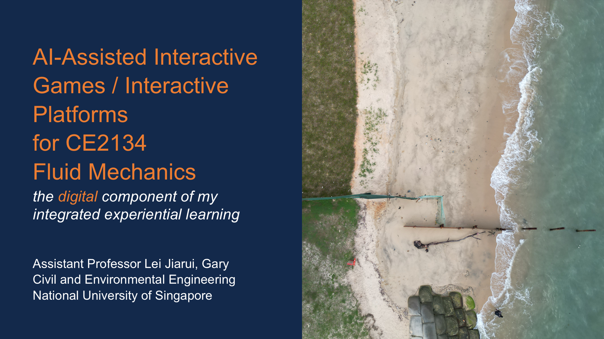
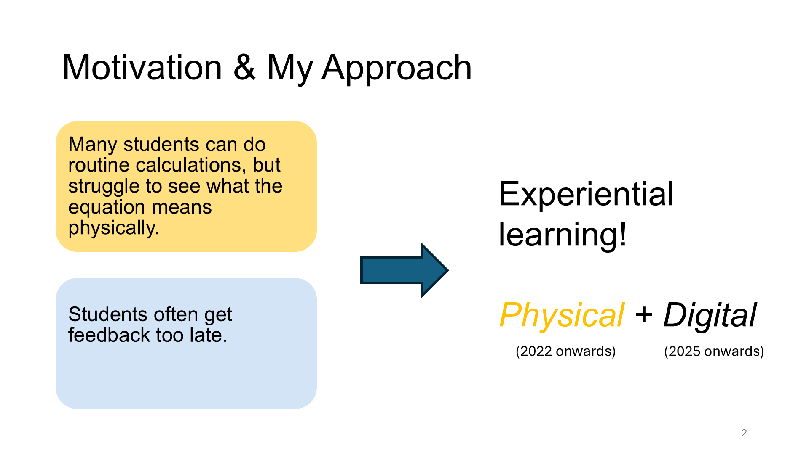
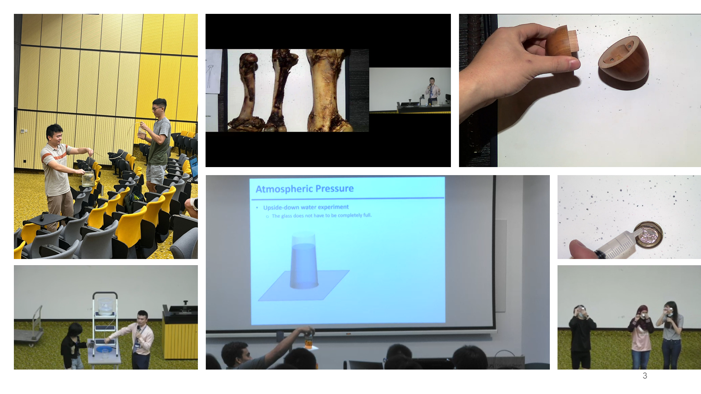
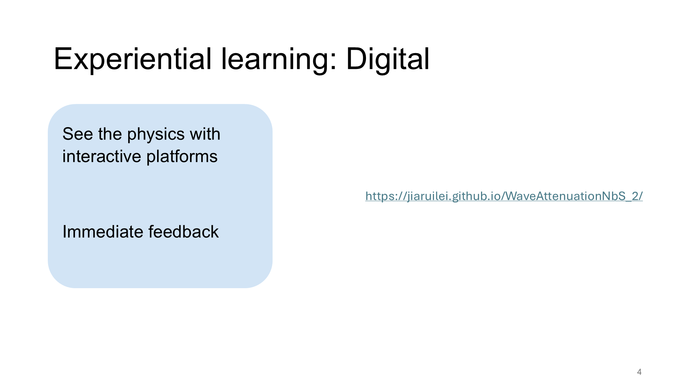
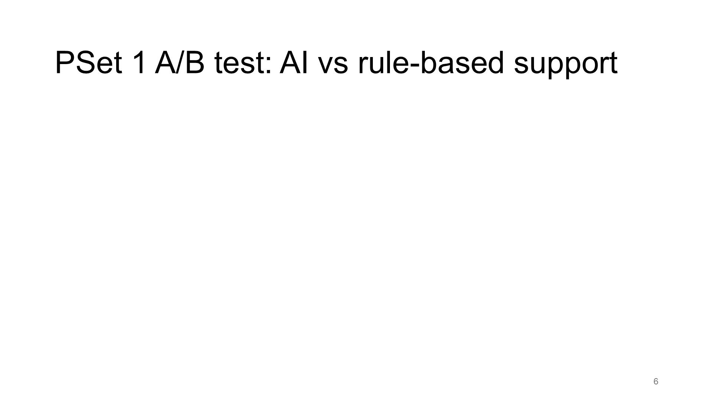
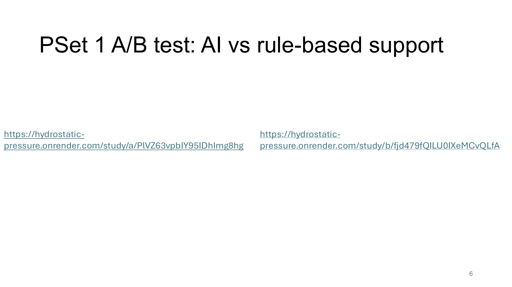
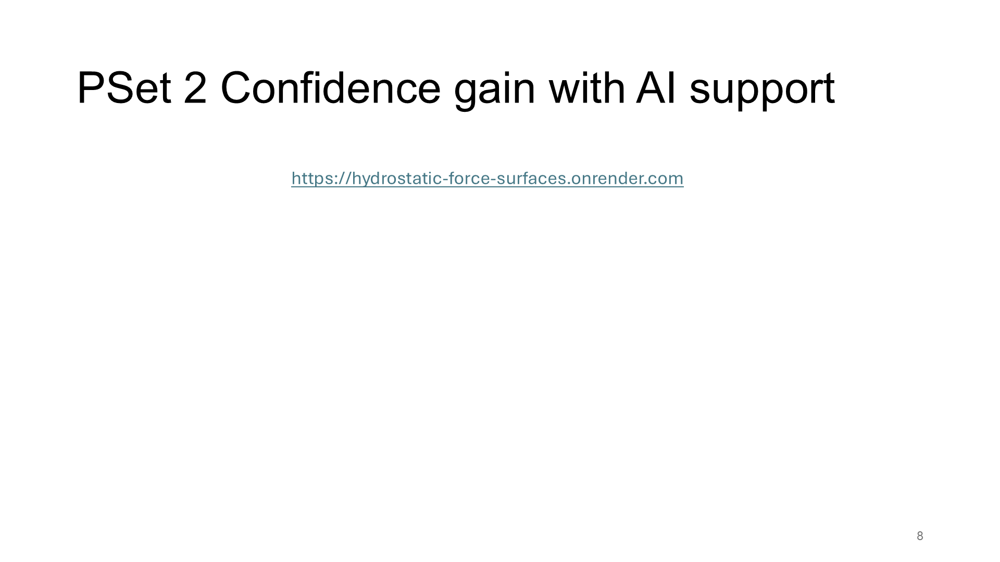
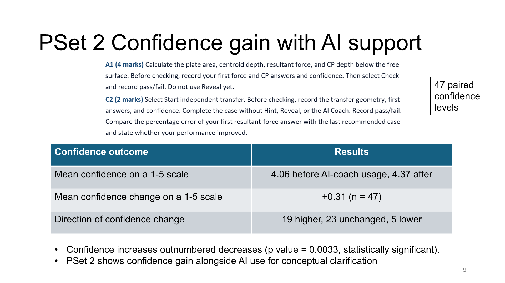
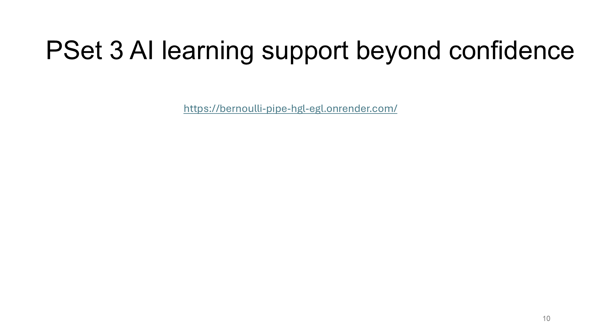

AI-integrated
Interactive Platforms
for CE2134
Fluid Mechanics
the digital component of my
experiential learning





https://jiaruilei.github.io/WaveAttenuationNbS_2/
Loading webpage…
Three CE2134 assignments in AY2026/27 Sem 1
109 students
320+ submissions
analysed
PSet 1: AI coach vs. rule-based replies
A/B test with 109 assessable submissions
PSet 2: Confidence improvement
47 paired ratings from 106 submissions
PSet 3: Learning evidence
Webpage interactions and quiz outcomes


https://hydrostatic-pressure.onrender.com/study/a/PlVZ63vpbIY95IDhImg8hg
Loading webpage…
![PSet 1 A/B test: AI vs rule-based support Observed outcome A: API-connected AI B: rule-based chat Off-topic/nonsense counts None identified (0/55) 12/54 (22.2%) Mean confidence change on a 1-5 scale +0.20 (n = 45) -0.03 (n = 49) Students reporting lower confidence 8/45 (17.8%) 14/49 (28.6%) API-connected AI coach showed fewer reported relevance problems. Difference in confidence change (A - B): +0.23 Confidence change did not differ significantly between A and B (Welch’s t-test, p value = 0.238). 45 and 49 paired confidence levels for A & B, respectively](slides/slide-07.png)

https://hydrostatic-force-surfaces.onrender.com/
Loading webpage…


https://bernoulli-pipe-hgl-egl.onrender.com/
Loading webpage…
![PSet 3 AI learning support beyond confidence Learning support Evidence from the chat logs Conceptual help 60.7% of IDs (37/61) asked at least one concept, reasoning or equation question. Repeated engagement 54.1% of IDs (33/61) had two or more recorded AI exchanges. Reasoning follow-ups At least 14.8% of IDs (9/61) probed earlier explanations in 13 manually reviewed follow-up questions. For example, a user corrected velocity from 1.2 to 2.7 m/s and pressure from 125.5 to 122.575 kPa. 144 exchanges across 61 anonymous IDs](slides/slide-11.png)
AI in my experiential learning
I have integrated AI into experiential learning.
I will continue integrating AI into this approach.
Experiential
learning
Physical + Digital
Take-home message
AI support shows promise for building confidence and helping students explore concepts.